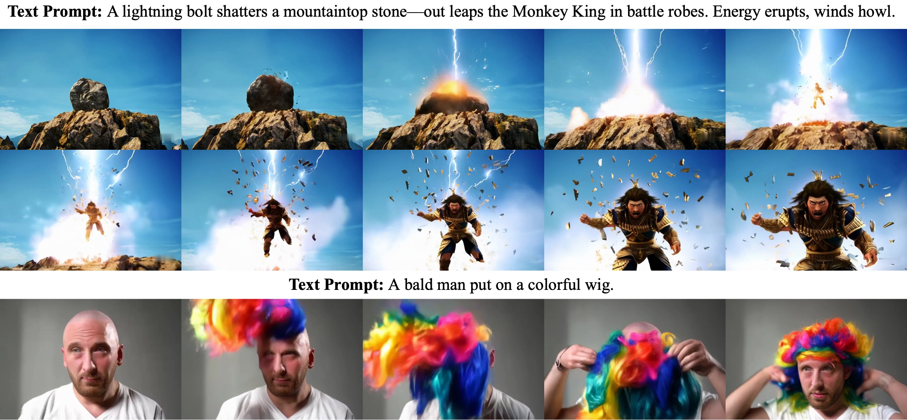
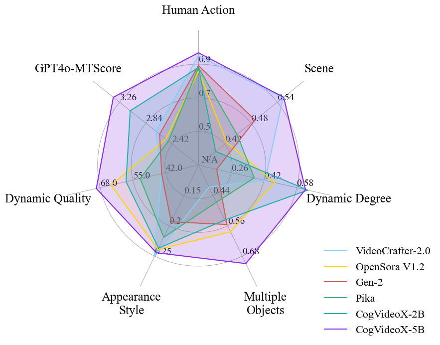
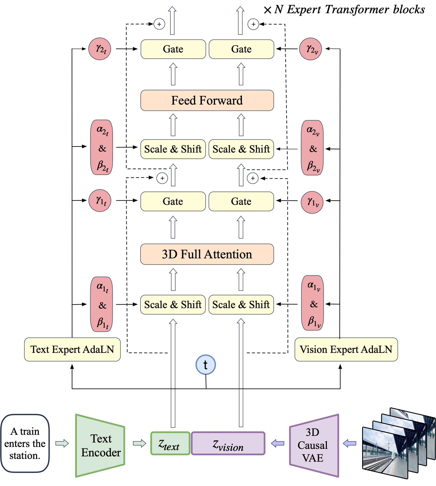
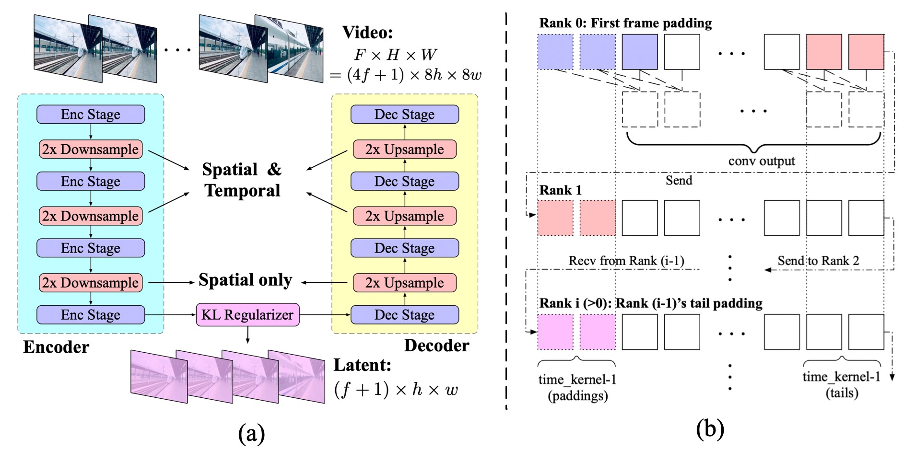
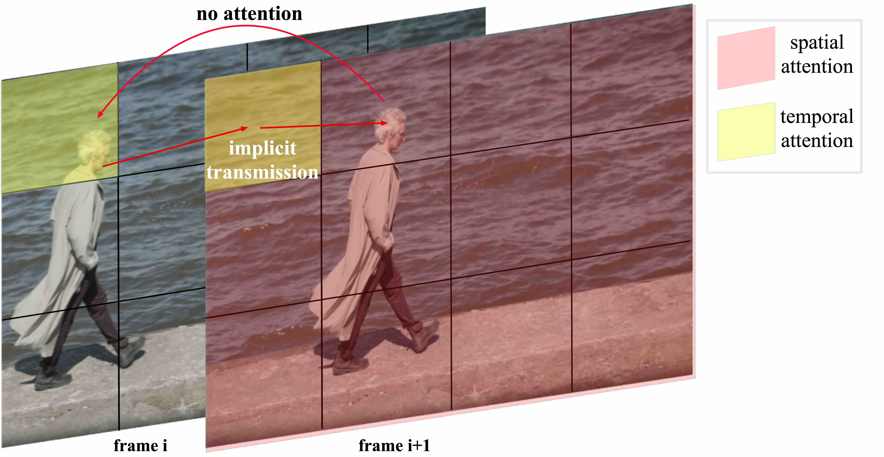
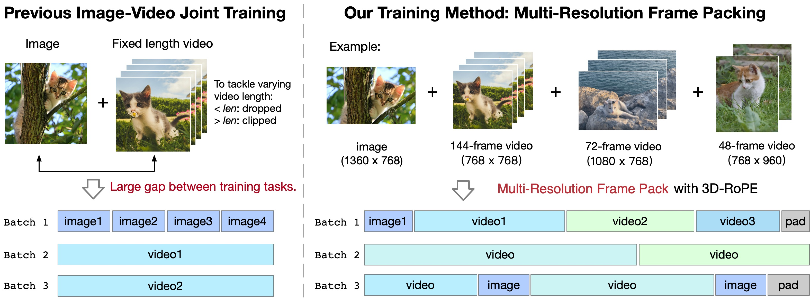
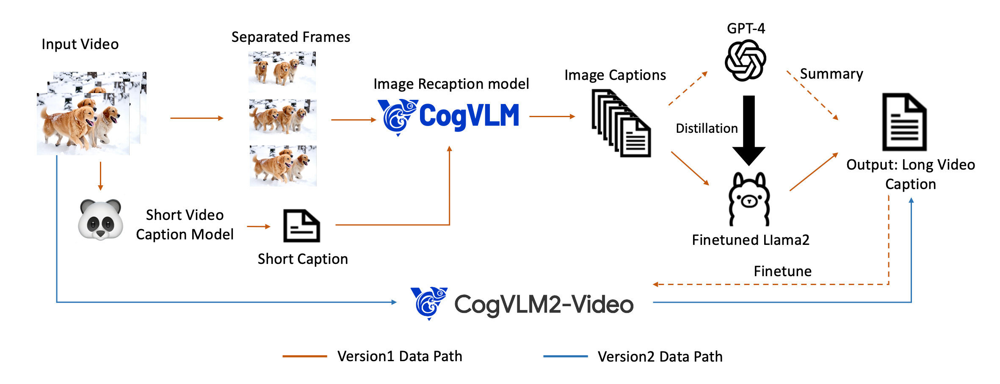
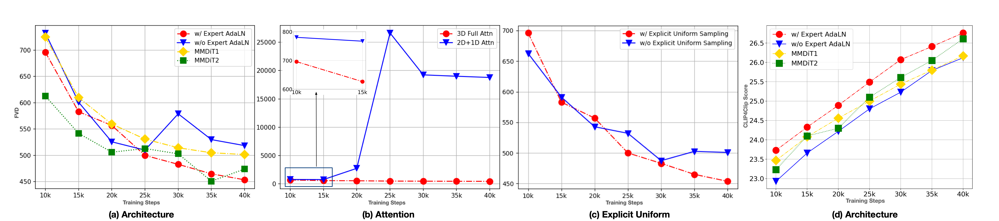

🎮 费曼一分钟（通俗速读）
文生视频 = 扩散 + DiT，但旧模型动作小、时长短、叙事难连贯。CogVideoX 四件套：3D 因果 VAE（时空 8×8×4 压缩，减 flicker）+ Expert Transformer（文本/视频 Expert AdaLN + 3D full attention 替代 2D+1D 分离注意力）+ Multi-Resolution Frame Pack（混时长/分辨率 batch 训练）+ 密集 caption 流水线（Panda70M → CogVLM 帧 caption → GPT-4 汇总 → CogVLM2-Caption）。产出 768×1360、16fps、10 秒视频；开源 2B/5B T2V 与 I2V。
📄 原文 Teaser：长时高分辨率文生视频样例

Abstract
We present CogVideoX, a large-scale text-to-video diffusion transformer that generates 10-second videos aligned with text prompts at 16 fps and 768×1360 resolution. Previous models often struggled with limited motion and short durations.
We introduce a 3D VAE for spatiotemporal compression, an expert transformer with expert adaptive LayerNorm for text-video fusion, and progressive training with multi-resolution frame packing. An effective text-video preprocessing pipeline and video captioning model significantly improve quality and semantic alignment. CogVideoX achieves SOTA on automated benchmarks and human evaluation. Code and weights are released.
我们提出 CogVideoX——大型文生视频扩散 Transformer，可生成与文本对齐的 10 秒视频（16fps，768×1360）。此前模型常动作有限、时长短。
引入3D VAE做时空压缩、带 Expert AdaLN 的Expert Transformer融合文本-视频、以及含 multi-resolution frame pack 的渐进训练。有效预处理与 video caption 模型显著提升质量与语义对齐。自动评测与人类评估 SOTA。代码与权重公开。
段落功能
宣告「3D VAE + Expert DiT + 训练/数据流水线」四件套，承诺长时、高动作、高分辨率、开源商用级 T2V。
逻辑角色
论证链起点：旧 T2V 局限 → 架构+训练+数据三管齐下 → SOTA + 开源。
1. Introduction
Text-to-video has advanced via Transformers and diffusion models (CogVideo, Phenaki, Make-A-Video, DiT/Sora). Yet achieving long-term consistent video with dynamic plots remains unclear — e.g., generating "lightning splits a rock, a person jumps out."
Challenges: efficiently modeling high-dim video, aligning video with text semantics, and constructing high-quality text-video pairs for training.
文生视频在 Transformer 与扩散模型推动下进展迅速（CogVideo、Phenaki、Make-A-Video、DiT/Sora），但长时一致、情节动态仍难——如「闪电劈开岩石、人从中跳出」类 prompt。
挑战：高效建模高维视频、文本-视频语义对齐、构建高质量 text-video 训练对。
段落功能
承接 Sora 时代背景，点明「长叙事 + 大动作」仍是 open problem；三路挑战对应后文 VAE / Expert Transformer / 数据流水线。
We introduce CogVideoX: 3D causal VAE compresses video spatiotemporally; expert Transformer with expert AdaLN fuses text and video; progressive training (multi-resolution frame pack, resolution curriculum) plus Explicit Uniform Sampling stabilizes diffusion training.
A video captioning pipeline (Panda70M → CogVLM frame captions → GPT-4 summary → LLaMA2/CogVLM2-Caption) recaptions ~35M clips. We train 2B and 5B models; 5B achieves SOTA on automated and human benchmarks (Fig. radar).
我们提出 CogVideoX：3D 因果 VAE时空压缩；Expert Transformer（Expert AdaLN）融合文本-视频；渐进训练（frame pack、分辨率课程）+ Explicit Uniform Sampling 稳定扩散训练。
video caption 流水线重标注约 3500 万片段。训 2B/5B 模型；5B 在自动与人类评测 SOTA（雷达图）。
论证技巧
四模块一一对应四挑战；强调开源商用级（首个 open commercial-grade T2V）作为工程贡献。
📄 原文雷达图：开源 T2V 多维度对比

2. Architecture — 3D VAE & Expert Transformer
Given video-text pair, a 3D causal VAE compresses video to latents $z_{\text{vision}}$; T5 encodes text to $z_{\text{text}}$. Concatenated sequence passes through expert transformer blocks; output unpatchified and decoded to video.
3D VAE: 3D conv compresses 8×8×4 (spatial×spatial×temporal). Temporally causal conv (padding at past only) prevents future leakage. Context parallel on temporal dim for long videos. Variant B: 16 latent channels, flickering ↓ vs 2D VAE baseline.
视频-文本对经 3D 因果 VAE 得 latent $z_{\text{vision}}$；T5 编码文本得 $z_{\text{text}}$。拼接后过 expert transformer；输出 unpatchify 再 VAE 解码。
3D VAE：3D 卷积实现 8×8×4 压缩。时间因果卷积（仅向过去 padding）避免未来信息泄漏；长视频用 context parallel。选用 variant B（16 通道），flicker 低于 SDXL 2D VAE 基线。
设计取舍
比逐帧 2D VAE 更减 flicker、更高压缩比；过激进压缩（16×16×8）即使加通道也难收敛——选 8×8×4 为 sweet spot。
📄 原文 Figure 2：CogVideoX 整体架构（MAIN）

📄 原文 Figure：3D Causal VAE 结构与 Context Parallel

Expert Transformer: Latent shape $T\times H\times W\times C$ patchified to length $\frac{T}{q}\cdot\frac{H}{p}\cdot\frac{W}{p}$. 3D-RoPE: independent 1D-RoPE on $(x,y,t)$ with channel split 3/8, 3/8, 2/8.
Expert AdaLN: Vision Expert AdaLN and Text Expert AdaLN apply diffusion timestep modulation separately — aligns modalities without dual transformers (vs MMDiT). 3D full attention over concatenated text+video tokens (not separated 2D+1D attention).
Expert Transformer：latent patchify 成序列。3D-RoPE：对 $(x,y,t)$ 独立 1D-RoPE，通道比 3/8、3/8、2/8。
Expert AdaLN：视觉/文本各用 Expert AdaLN 做 timestep 调制——比 MMDiT 双 Transformer 更省参。对拼接 token 做 3D full attention（非 2D+1D 分离注意力）。
3D Full Attention vs 2D+1D（Fig. attention）
分离时空注意力时，帧 $i{+}1$ 的人头无法直接 attend 帧 $i$ 的同物体——大动作一致性差。Full 3D attention + FlashAttention 可扩展。
📄 原文 Figure：分离时空注意力的不一致问题

💻 代码对照 — 3D VAE · 3D Attention · Frame Pack · 训练流程
官方仓库：github.com/THUDM/CogVideo（SAT 训练栈）· 推理常用 diffusers 的 CogVideoXPipeline。下文对照论文与 sat/vae_modules/、sat/dit_video_concat.py、sat/data_video.py。
① 3D 因果 VAE — 压缩率与因果卷积
总压缩 8×8×4（像素 → latent）：encoder 有 3 级 spatial downsample（各 2× → 8×），前 2 级同时压时间维（各 2× → 4×）。配置见 cogvideox_5b.yaml：ch_mult: [1,2,2,4]、temporal_compress_times: 4、z_channels: 16。
| 阶段 | 像素空间 | latent 空间（VAE 后） | DiT token 网格（patch=2） |
|---|---|---|---|
| 例：480×720，49 帧 | $T{=}49,\; H{=}480,\; W{=}720$ | $T'{=}13,\; H'{=}60,\; W'{=}90$（约 8×8×4） | $\text{rope}_T{=}13,\; \text{rope}_H{=}30,\; \text{rope}_W{=}45$ |
| 压缩来源 | — | ContextParallelEncoder3D 前 2 级 compress_time=True | ImagePatchEmbeddingMixin 对 latent 做 $2{\times}2$ patch（时间维 patch=1） |
关于「时间 ×4」：用户常把 time_compressed_rate: 4 与 VAE 时间压缩混淆——二者一致：VAE 把帧数压到约 $T' = \lfloor(T-1)/4\rfloor + 1$，故原始帧数需满足 4k+1（代码里 nearest_smaller_4k_plus_1）。
因果卷积：ContextParallelCausalConv3d 只在时间维过去侧 padding（pad_mode="first"），当前帧不窥视未来帧 → 自回归解码友好、减少时序泄漏。
② 图像 / 单帧视频 — encode & decode
训练把图像当 T=1 的视频混入 batch。推理 I2V 时输入首帧，后续帧由 DiT 生成。
- VAE：单帧张量形状
[B, C, T=1, H, W]，走同一VideoAutoencoderInferenceWrapper.encode/decode；时间维仅 1 帧，因果卷积退化为普通 3D conv。 - 帧数约束：多帧视频必须
T % 4 == 1（如 49、81）；不足时用末帧重复 pad（见 Frame Pack）。 - 位置编码：
Basic3DPositionEmbeddingMixin在images.shape[1]==1时只取空间位置表（text_length + H×W），不按完整时间轴展开。 - 论文 patchify：当时间 patch $q>1$ 时，在序列开头 repeat 第一帧，使图文联合训练时图像与短视频 token 布局一致（
model.tex）。
DiT 阶段 first_stage_config 加载 3d-vae.pt 且 loss_config: Identity —— VAE 不参与 DiT 反传，与 LDM 相同两阶段范式。
③ 3D Full Attention — 机制与伪代码
对比 2D+1D：先做帧内 spatial attention，再做跨帧 temporal attention——相邻帧同一物体 token 不直接相连（Fig.5）。3D Full 把文本 token 与所有时空 patch token 拼成一条序列，做一次标准多头 self-attention；视频 token 的 Q/K 经 3D-RoPE 注入 $(t,y,x)$ 相对位置。
复杂度：序列长度 $L = n_{\text{text}} + T' \cdot H' \cdot W'$（再除以 patch²）。5B 配置 768×1360×10s 时 $L$ 可达 70 万级（附录），依赖 FlashAttention + 激活检查点。
④ Frame Pack — len < max 与 len > max 怎么处理？
每个 training step 为 batch 设定统一目标帧数 num_frames（由当前 stage 的 max duration × fps 决定，如 6s×8fps=49）。sat/data_video.py：
- len < num_frames（短视频 / 图像）：用最后一帧复制填满（官方 issue #643 确认：预训练工程选择，非 zero pad）。图像经采样后 $T{=}1$，再 pad 到 batch 统一长度。
- len > num_frames（长视频）：
load_video先在时间轴上均匀抽帧到目标数量；若仍 $\ge$ num_frames 则tensor[:num_frames]截断。不会把整段长视频塞进单次 forward。 - 过短整段丢弃：
process_fn_video若duration < num_frames/fps则 skip 该样本。 - 与 Patch'n Pack 关系：论文层面对不同分辨率再 pack 进同形状 batch；SAT 实现里主要靠「每 stage 固定 num_frames + 上述 pad/truncate」达成 mixed-duration，配合 3D RoPE 外推取位置表前段。
⑤ VAE 与 DiT — 两阶段训练（非端到端联合）
论文 §VAE + 附录明确：先单独训 3D VAE，再冻结训 CogVideoX DiT。VAE 自身亦分两阶段。
| 阶段 | 训练对象 | 分辨率 / 时长 | 备注 |
|---|---|---|---|
| A1 VAE | Encoder+Decoder+判别器 | 256²，17 帧 | L1+LPIPS+KL，后加 GAN |
| A2 VAE | 同上 | context parallel，161 帧 | 扩展长视频重建 |
| B1–B3 DiT | Expert Transformer + T5 冻结 | 256→480→768，6s→10s | Frame Pack + v-pred + Uniform Sampling |
| B4 FT | DiT | 768×1360，10s | top 20% 干净数据，去字幕/水印 |
3. Training — Frame Pack & Progressive Curriculum
Mix images and videos (image = 1-frame video). Diffusion uses v-prediction + zero SNR schedule (LDM-style).
Multi-Resolution Frame Pack: Inspired by Patch'n Pack — pack videos of different durations/resolutions into same batch shape. 3D RoPE extrapolation (extend position table front portion per video) preserves detail vs interpolation.
Pad / truncate rule (code): Shorter clips → repeat last frame to num_frames; longer → uniform subsample then truncate to first num_frames. See 代码 §④.
Progressive training: 256px → 512px → 768px; short side resize, aspect ratio preserved; final HQ fine-tune on top 20% clean subset.
图文混合训练（图=单帧视频）。扩散用 v-prediction + zero SNR 调度。
Multi-Resolution Frame Pack：不同长度/分辨率视频 pack 进同 batch。3D RoPE 外推（按分辨率取表前段）保细节。
Pad / 截断（代码）：短于目标 → 末帧重复 填满；长于目标 → 均匀抽帧后 截断 前 num_frames 帧。详见 代码 §④。
渐进训练：256→512→768px；保宽高比；末阶段 20% 高质量子集微调。
逻辑角色
Frame Pack 解决固定帧数训练的「双模态分裂」与数据浪费；pad_last_frame 用末帧重复（非黑帧）避免引入假运动静止段。
📄 原文 Figure：Mixed-Duration Training & Frame Pack

Explicit Uniform Sampling: Standard DDPM samples $t$ uniformly per rank — empirically non-uniform, loss fluctuates (loss magnitude varies by $t$). Split $[1,T]$ into $n$ intervals ($n$ = data-parallel ranks); each rank samples uniformly within its interval → stable loss (Fig. ablation).
Explicit Uniform Sampling：常规每 rank 随机采 $t$ 实际不够均匀、loss 波动大。将 $[1,T]$ 划为 $n$ 段（$n$=并行 rank 数），每 rank 在各自区间均匀采样 → loss 更稳、收敛更快。
论证技巧
工程向但可消融：各 timestep 单独 loss 均下降——不是某一 $t$ 的 trick，而是全局训练动力学改善。
4. Data — Filtering & Dense Captioning
~35M filtered single-shot clips (~6s avg) + 2B aesthetic-filtered images (LAION-5B, COYO-700M).
Video filtering: 6 negative categories (Editing, Lack of Motion Connectivity, Low Quality, Lecture Type, Text Dominated, Noisy Screenshots) — Video-LLaMA classifiers + optical flow + aesthetic dynamic thresholds.
Dense caption pipeline: Panda70M short caption → CogVLM per-frame dense caption → GPT-4 summary → LLaMA2 fine-tune for scale → CogVLM2-Caption end-to-end model (also enables video-to-video via caption).
约 3500 万过滤单镜头片段（均 ~6s）+ 20 亿美学过滤图像。
视频过滤：6 类负样本（剪辑/无运动连贯/低质/讲座/文字主导/屏幕录制）+ 光流与美学动态阈值。
密集 caption：Panda70M 短 caption → CogVLM 帧级 dense caption → GPT-4 汇总 → LLaMA2 规模化 → CogVLM2-Caption 端到端（亦可 video-to-video）。
段落功能
文生视频瓶颈常在caption 质量而非仅算力——CogVideoX 把数据工程（过滤+重标注）与模型设计并列论证。
📄 原文 Figure：Dense Video Caption 流水线

5. Experiments
Ablations: 3D RoPE beats sinusoidal absolute PE (faster loss convergence). Expert AdaLN beats no-expert and MMDiT (same params) on FVD & CLIP4Clip. 3D full attention beats 2D+1D (lower FVD early; 2D+1D unstable at 5B). Explicit Uniform Sampling stabilizes loss per timestep.
VAE: Ours 3D VAE — flickering 85.5, PSNR 29.1 vs Open-Sora 92.4/28.5 on WebVid 17-frame 256².
消融：3D RoPE 优于正弦绝对位置编码。Expert AdaLN 优于无 expert 与同参 MMDiT（FVD、CLIP4Clip）。3D full attention 优于 2D+1D（5B 时后者易崩溃）。Explicit Uniform Sampling 稳定各 timestep loss。
VAE：本 3D VAE flickering 85.5、PSNR 29.1，优于 Open-Sora 等开源 3D VAE。
论证技巧
架构选择均有 loss/FVD 曲线支撑——Expert AdaLN 是「够用且省参」相对 MMDiT 的关键论据。
📄 原文 Figure：WebVid 消融（FVD / CLIP4Clip）

Automated metrics (Table 2): On VBench-aligned dimensions + Dynamic Quality + GPT4o-MTScore, CogVideoX-5B wins 5/7 metrics; CogVideoX-2B best on Dynamic Degree (66.39) and competitive elsewhere. Baselines: T2V-Turbo, AnimateDiff, VideoCrafter2, OpenSora, Show-1, Gen-2, Pika, LaVie-2.
Human eval vs Kling (2024.7): CogVideoX-5B wins on Sensory Quality (0.722), Instruction Following (0.495), Physics Simulation (0.667), Cover Quality (0.712); total 2.74 vs Kling 2.17.
自动指标（表 2）：CogVideoX-5B 在 7 项中 5 项最佳；2B 在 Dynamic Degree 最高（66.39）。基线含 T2V-Turbo、AnimateDiff、VideoCrafter2、OpenSora、Show-1、Gen-2、Pika、LaVie-2。
人类评测 vs Kling：CogVideoX-5B 在感官质量、指令遵循、物理仿真、封面质量全胜；总分 2.74 vs Kling 2.17。
| Model | Human Action | Dynamic Degree | Multiple Objects | Dynamic Quality | GPT4o-MT |
|---|---|---|---|---|---|
| OpenSora V1.2 | 85.8 | 47.22 | 58.41 | 63.7 | 2.52 |
| LaVie-2 | 96.4 | 31.11 | 64.88 | — | 2.46 |
| CogVideoX-2B | 96.6 | 66.39 | 57.68 | 57.7 | 3.09 |
| CogVideoX-5B | 96.8 | 62.22 | 70.95 | 69.5 | 3.36 |
- 论点↔证据：强调 Dynamic Degree / Dynamic Quality / GPT4o-MT——避免「静态视频刷分」；5B 在复杂动态场景领先。
6. Conclusion
We present CogVideoX, a SOTA text-to-video diffusion model with 3D VAE and Expert Transformer, generating coherent long videos with significant motion. We explore scaling laws and aim for larger models and longer, higher-quality generation.
我们提出 CogVideoX——SOTA 文生视频扩散模型，以 3D VAE + Expert Transformer 生成动作丰富、时序连贯的长视频。正探索 scaling law，目标更大模型与更长更高质量生成。
逻辑角色
闭环：长叙事 T2V 难题 → 架构+训练+数据三件套 → 开源 2B/5B 商用级 → scaling 展望。
符号速查表
| 符号 | 含义 |
|---|---|
| $T,H,W,C$ | 视频 latent 帧数 / 高 / 宽 / 通道 |
| $z_{\text{vision}}, z_{\text{text}}$ | patchify 后视频 token 序列；T5 文本 embedding 序列 |
| 3D VAE | 时空 8×8×4 因果 VAE，KL + LPIPS + GAN 训练 |
| Expert AdaLN | 视觉/文本分支独立 adaptive LayerNorm（timestep 调制） |
| 3D-RoPE | 对 $(x,y,t)$ 三分量 RoPE，通道 3/8+3/8+2/8 |
| Frame Pack | 同 batch pack 不同时长/分辨率视频（Patch'n Pack 思路） |
| Explicit Uniform Sampling | 各 DP rank 负责 $t$ 区间分段均匀采样 |
| v-prediction | 扩散目标预测 velocity $v$（非 $\epsilon$） |
| FVD / CLIP4Clip | 视频 Fréchet 距离；文本-视频 CLIP 对齐分 |
论证结构总览
→ 论点（3D VAE 降维减 flicker + Expert DiT 深融合 + 渐进/Frame Pack 训练 + 密集 caption 数据）
→ 方法（3D causal VAE 8×8×4；Expert AdaLN + 3D full attention + 3D-RoPE；v-pred + zero SNR；Explicit Uniform Sampling）
→ 数据（35M 过滤 clip + 2B 图；6 类负样本过滤；Panda→CogVLM→GPT-4→CogVLM2-Caption）
→ 证据（消融 Fig.8；Table 2 七指标；人类评测 vs Kling；VAE PSNR/flicker）
→ 结论（开源 2B/5B T2V+I2V；ICLR 2025）
核心主张（一句话）
通过 3D 因果 VAE、Expert Transformer（Expert AdaLN + 3D 全注意力）与渐进式 multi-resolution 训练，配合大规模 dense video caption 流水线，CogVideoX 在开源文生视频中实现长时、高动作、高分辨率且文本对齐的 SOTA 生成。
来源：arXiv:2408.06072 · github.com/THUDM/CogVideo · 生成工具：paper-logic-reading skill（三栏版）
🧩 结构化十问（AI 解构）
让 AI 当助教，从十个角度提取论文骨架。
Q1 · 论文试图解决什么问题？
Q2 · 这是否是一个新问题？
Q3 · 要验证什么科学假设？
Q4 · 有哪些相关研究？
Q5 · 解决方案的关键是什么？
Q6 · 实验是如何设计的？
Q7 · 用什么数据集？代码开源吗？
Q8 · 实验结果是否支持假设？
Q9 · 主要贡献？
Q10 · 下一步？
🔬 深挖追问
第一性原理 · 视频 vs 图像扩散
视频生成难在时间维：token 数 $\propto T\times H\times W$。CogVideoX 先 VAE 压时空，再在 token 序列上做 DiT——与 Sora 同范式，但公开了 VAE 结构、Expert AdaLN 与数据流水线细节。
第一性原理 · Expert AdaLN vs MMDiT
MMDiT 用双 Transformer 分别处理图文再交互；CogVideoX 拼接 token 后单塔，仅用 Expert AdaLN 分模态调制——参数更少、更接近 LLM scaling 路径；消融显示同参下 FVD 更优。
第一性原理 · 数据即模型
35M clip 若用原始短视频 caption，模型学不到「闪电劈石、人跳出」级叙事。Dense caption 把数据工程升格为与架构同级贡献——后续 HunyuanVideo/Wan 亦强调 caption/filter。
批判性思维 · 盲区
- 指标博弈：VBench 部分维度偏好静态高保真；作者主动加 Dynamic Quality/GPT4o-MT 但仍难覆盖叙事正确性。
- Caption 闭环：训练 caption 来自 GPT-4/CogVLM 蒸馏，分布偏移与幻觉 caption 风险未量化。
- 算力透明度：5B 全阶段训练 GPU·day 披露有限，复现门槛仍高。
- 2D+1D 遗留：社区 AnimateDiff 生态仍广；CogVideoX 全 3D attention 推理更贵。
- 版权：35M 网络视频 + 2B 图，合规与 opt-out 未讨论。